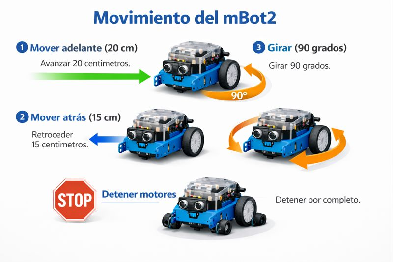
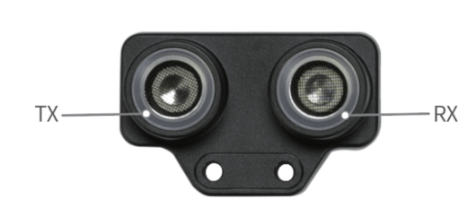
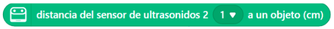
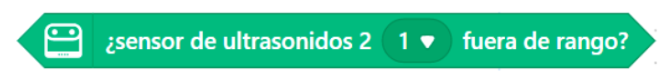
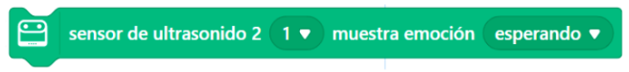
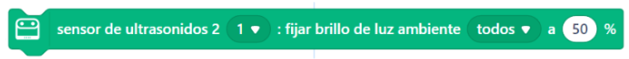
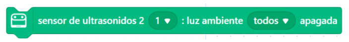

Tema 2. Detección de obstáculos con el sensor ultrasónico

El mBot2 tiene un sensor ultrasónico que le permite medir la distancia a los objetos usando sonidos, ya que envía un sonido, este rebota en un objeto y regresa al robot, ayudándole a saber qué tan lejos está; gracias a esto, el mBot2 puede detectar obstáculos y decidir si debe avanzar o detenerse, ayudando a los niños a aprender a pensar, tomar decisiones y programar de forma sencilla usando “si… entonces”.
Sensor ultrasónico de distancia

Bloques clave
En mBlock estos bloques del sensor de ultrasonido sirven para que el robot percibe su entorno y detecte obstáculos y actúa de forma inteligente.
Distancia del sensor de ultrasonidos ( ) a un objeto (cm)
Permite medir la distancia entre el robot y un objeto ubicado frente a él, expresada en centímetros. Este bloque es fundamental para que el robot pueda detectar obstáculos y tomar decisiones basadas en la cercanía de los objetos.

Sensor de ultrasonidos ( ) fuera de rango
Indica si el sensor no detecta ningún objeto dentro de su rango de alcance. Es útil para diferenciar entre la presencia y ausencia de obstáculos en el entorno.

Sensor de ultrasonidos ( ) muestra emoción ( )
Permite mostrar en la pantalla del robot una emoción relacionada con la detección del entorno, como esperando, alerta o sorpresa, facilitando una retroalimentación visual para el usuario.

Sensor de ultrasonidos ( ) : fijar brillo de luz ambiente todos ( )
Permite controlar la intensidad del brillo de las luces del robot, ajustándola según la distancia detectada por el sensor ultrasónico, lo que posibilita crear alertas visuales progresivas.

Sensor de ultrasonidos ( ) luz ambiente todos v apagada
Desactiva completamente las luces del robot cuando no se detectan objetos o cuando se desea indicar que el entorno está libre de obstáculos.
